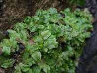

Corsiniaceae
No widely accepted common name
Corsiniaceae is a monogeneric family (containing only Corsinia) of complex thalloid liverworts in the order Marchantiales. It is adapted to seasonally dry, warm-temperate environments, particularly the Mediterranean region. Key features include sessile dorsal archegonial cushions often bearing multiple sporophytes, and relatively simple air pores compared to related families like Exormothecaceae.
Overview
The Corsiniaceae family contains a single genus, Corsinia, with the most well-known species being Corsinia coriandrina. This liverwort is characteristic of Mediterranean and similar warm-temperate climates with pronounced seasonal drought. It typically grows on bare soil in open, sunny habitats, often forming extensive patches during the wet winter and spring months before dying back or becoming dormant in the summer.
Corsinia possesses a complex thalloid structure with internal air chambers, but its air pores are relatively simple compared to the elaborate structures seen in Exormothecaceae. A defining characteristic of the family is its reproductive strategy: archegonia are produced in sessile cushions on the dorsal surface of the thallus, and uniquely, multiple sporophytes commonly develop within a single cushion, each protected by its own calyptra (a remnant of the archegonium wall).
Like Exormothecaceae, Corsiniaceae represents an evolutionary lineage within Marchantiales adapted to xeric conditions, employing strategies like desiccation tolerance and sessile reproductive structures. Its unique feature of multiple sporophytes per archegonial cushion distinguishes it from closely related families.
Quick Facts
- Scientific Name: Corsiniaceae Engl.
- Common Name: (None widely used)
- Number of Genera: 1 (Corsinia)
- Number of Species: 1 (Corsinia coriandrina - though some regional variants exist)
- Distribution: Primarily Mediterranean region, extending to Macaronesia, SW Asia, and parts of North and South America with similar climates.
- Evolutionary Group: Bryophytes - Liverworts (Marchantiophyta) - Marchantiopsida - Marchantiales
Key Characteristics
Gametophyte (Thallus) Structure
The thallus is adapted to seasonal drought:
- Form: Relatively large for a thalloid liverwort, strap-shaped to irregularly lobed, often dichotomously branched, forming flat patches or rosettes on the soil.
- Texture & Colour: Somewhat fleshy, bright green to yellowish-green when moist, often turning brownish or developing purplish margins when stressed or dry.
- Internal Structure: Complex thallus with a dorsal layer of air chambers containing photosynthetic filaments and a ventral storage region.
- Air Pores & Chambers: Air pores are present on the dorsal surface but are relatively simple, often slightly sunken or level with the surface, not distinctly elevated or chimney-like as in Exormotheca. Chambers are well-defined.
- Rhizoids: Both smooth and pegged rhizoids arise from the ventral surface.
- Ventral Scales: Present, typically in two rows, often hyaline (clear) or purplish, sometimes with appendages.
Reproductive Structures
Species are typically dioicous (separate male and female plants).
- Antheridia: Male organs are usually sunken in rows within distinct, often crescent-shaped or elongated receptacles (androecia) on the dorsal surface of male thalli.
- Archegonia: Female organs are borne in specialized structures called archegonial cushions (or sessile archegoniophores) located dorsally on female thalli. These cushions are unstalked (sessile), appearing as slightly raised areas, often covered by protective scales. A key diagnostic feature is that multiple archegonia within one cushion can be fertilized and develop into sporophytes.
Sporophyte
The sporophyte development is distinctive:
- Multiple Sporophytes: Typically, several sporophytes develop simultaneously within a single archegonial cushion.
- Foot & Seta: Each sporophyte has a foot embedded in the cushion tissue and a very short seta.
- Capsule: Globose, containing spores and elaters. The capsule wall is thin and often disintegrates relatively early during development.
- Protection: Each developing sporophyte is enclosed within its own calyptra (derived from the archegonium wall). The entire group is protected by the surrounding scales of the archegonial cushion. The sporophytes mature close to the thallus surface.
Spores and Elaters
Released upon decay of the capsule wall and surrounding structures.
- Spores: Large, tetrahedral or globose, with distinctive reticulate (net-like) ornamentation.
- Elaters: Present, relatively short and stout, aiding spore dispersal.
Field Identification
Identifying Corsiniaceae (Corsinia coriandrina) involves recognizing its thallus features, arid habitat, and particularly its unique reproductive structures.
Primary Identification Features
- Sessile Dorsal Archegonial Cushions: On female plants, look for distinct, unstalked cushions on the upper surface, often appearing slightly raised and covered with scales.
- Multiple Sporophytes per Cushion: If mature sporophytes are present (appearing as small, dark capsules within the cushion), observing several clustered together within one cushion is highly diagnostic.
- Habitat: Characteristic of seasonally dry, open habitats, typically growing directly on bare soil (often clay or calcareous) in Mediterranean-type climates.
- Thallus Size & Form: Relatively large, flat, strap-shaped to lobed thalli forming patches.
- Simple Air Pores: Pores visible on the dorsal surface (may need hand lens) are simple, not elevated into chimneys like Exormotheca.
Secondary Identification Features
- Antheridial Receptacles: Male plants show sunken antheridia in distinct dorsal receptacles.
- Coloration: Often bright green when moist, can develop purplish tints when stressed.
- Large Spores: If spore details are visible (microscopic), they are large and reticulately ornamented.
Seasonal Identification Tips
- Wet Season (Winter/Spring): Thalli are most conspicuous, green, and actively growing. Reproductive structures (antheridial receptacles, archegonial cushions, developing sporophytes) are formed during this period.
- Dry Season (Summer/Fall): Thalli typically desiccate, fragment, and may seem to disappear, persisting as dormant fragments or spores in the soil.
Common Confusion Points
Corsinia might be confused with:
- Exormotheca (Exormothecaceae): Shares the arid habitat and sessile/subsessile female receptacles. However, Exormotheca has highly distinctive, elevated chimney-like pores and typically only one sporophyte develops per receptacle.
- Riccia species (Ricciaceae): Some large terrestrial Riccia (like R. lamellosa) grow in similar habitats and form rosettes. Riccia lacks the complex internal air chambers of Corsinia, has sporophytes embedded within the thallus (no archegonial cushion), and different pore structures (if present).
- Targionia (Targioniaceae): Found in similar dry habitats but has simple pores and a unique ventral bivalved involucre enclosing a single sporophyte; lacks dorsal archegonial cushions.
- Other complex thalloids (e.g., Mannia, Asterella in Aytoniaceae): These usually have distinctly stalked archegoniophores, even if short, and typically one sporophyte per involucre/archegoniophore branch.
Key differentiator: Look for the sessile dorsal archegonial cushions, especially if multiple developing sporophytes can be seen clustered within a single cushion, combined with simple pores and arid habitat.
Field Guide Quick Reference
Look For:
- Sessile dorsal archegonial cushions
- Multiple sporophytes per cushion (if fertile)
- Arid/semi-arid habitat (bare soil)
- Large, flat, strap-like thallus
- Simple air pores (not chimney-like)
Key Distinctions:
- Archegonial structure is a dorsal cushion (not ventral involucre like Targionia)
- Often multiple sporophytes per cushion (unlike most others)
- Pores simple (unlike elevated pores of Exormotheca)
- Complex internal chambers (unlike Riccia)
Notable Examples
The family is monogeneric, containing only the genus Corsinia.

Corsinia coriandrina
(Coriander Liverwort - rare usage, from scent)
The sole species in the family. It exhibits all the key characteristics: large thallus, simple pores, sessile dorsal archegonial cushions often bearing multiple sporophytes, and adaptation to Mediterranean-type climates. It can sometimes emit a faint coriander-like scent when crushed, hence the specific epithet.
Phylogeny and Classification
Corsiniaceae is firmly placed within the order Marchantiales. Molecular phylogenetic studies consistently show it as a distinct lineage, often grouping near or sister to Exormothecaceae. Both families share adaptations to xeric environments and possess sessile or subsessile female reproductive structures, suggesting a common evolutionary history related to these conditions, diverging from the lineages with stalked archegoniophores.
The unique reproductive strategy involving multiple sporophytes developing within a single archegonial cushion is a significant autapomorphy (unique derived character) of Corsiniaceae, setting it apart from all other liverwort families. This strategy might increase reproductive output in environments where the growing season is short and unpredictable.
Position in Plant Phylogeny
- Kingdom: Plantae
- Division: Marchantiophyta (Liverworts)
- Class: Marchantiopsida
- Order: Marchantiales
- Family: Corsiniaceae
Evolutionary Significance
Corsiniaceae is evolutionarily significant for:
- Adaptation to Aridity: Like Exormothecaceae, it showcases adaptations to survive seasonal drought in warm-temperate climates.
- Unique Reproductive Strategy: The development of multiple sporophytes per archegonial cushion is unique among liverworts and represents an interesting evolutionary experiment in reproductive allocation.
- Phylogenetic Position: Helps understand the relationships among Marchantiales lineages that have adapted to xeric conditions and evolved alternatives to stalked archegoniophores.